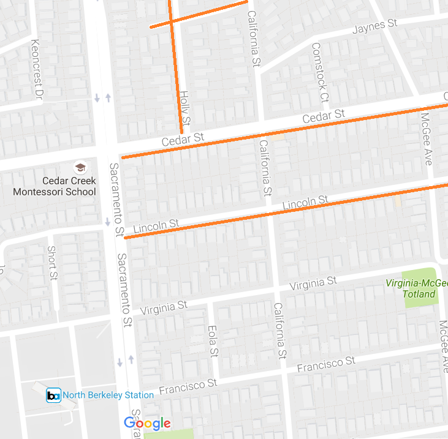

Clipper Cards, the easiest way to pay for transit
These are plastic cards that you can use to pay for all buses, trains and ferries in the Bay Area. You can tie them to a credit card so they are automatically paid, and then you don't need to bother with cash when boarding any mass transit. You can get Clipper cards many places -- there is a Walgreen's drug store on Shattuck that is 5 minutes from the house where you can acquire them.
(Note there are also special youth and senior Clipper cards which your mother and the kids should qualify for -- these give you discounts, and on BART the discount is about 70%. Walgreen's doesn't sell the discounted cards; if you want them, you must visit a Clipper card customer center. You just need to prove your age using official identification.
Buses
BART
BART is one of two major Bay Area train systems. (The other one is CalTrain, serving San Francisco and the south bay.) There are BART schedules and CalTrain schedules online, but the most convenient way to get the train times you want is simply to choose the transit option from your navigational service (e.g., Google maps).
Parking at BART
The BART station downtown Berkeley has no public parking associated with it. If you are driving to the station, you should go to the North Berkeley station, which is 8 minutes away by car.
There is a large parking lot at North Berkeley BART station. On the weekend, parking is free. During the week you must pay to park here, and the lot is sometimes full. There are two classes of parking spots, reserved permit spots and regular "fee" spots. The regular spots sometimes are all taken on weekdays at a fairly early time, sometimes before 8am. Here is a map of the two classes of parking spots. The permit spots are reserved until 10am, at which time unused spots become available to everyone. Spots can be reserved for particular days in advance at the BART web site parking reservations page.
If all else fails, the street parking around the station is reserved for local residents of that neighborhood, but there are some streets a few minutes walk away which are free to everyone. Here are the blocks that I know about:

contact Nelson:
nelson.sproul@gmail.com
(209)677-7685
contact Deirdre:
dvsproul@gmail.com
(415)370-6422
Home